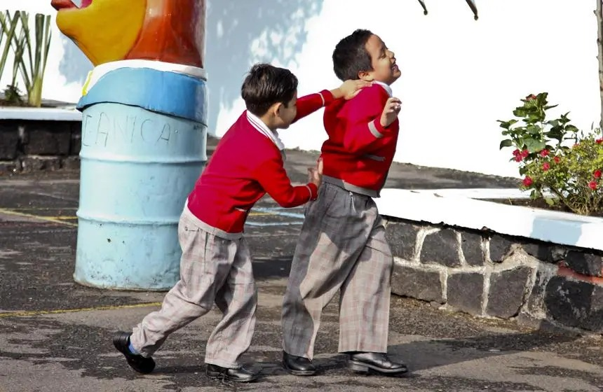
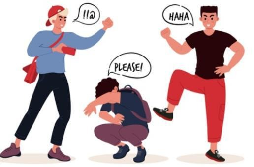
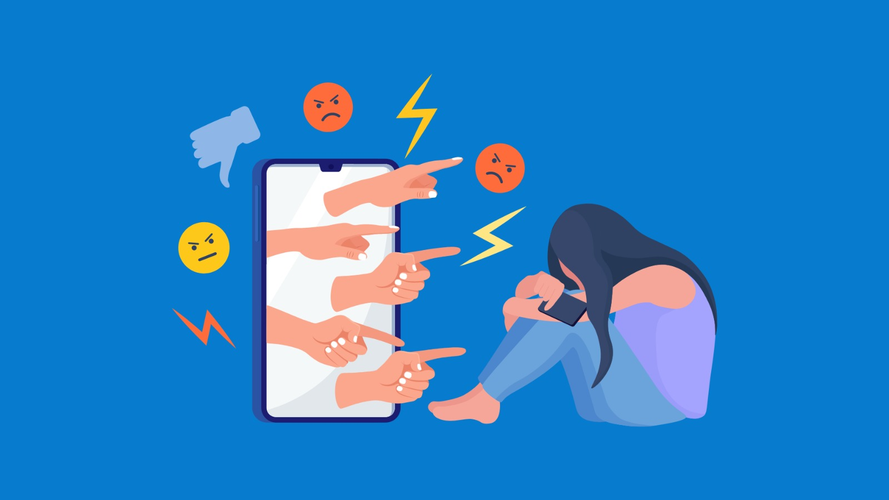

¿Cómo se manifiesta el acoso?
El bullying no siempre se presenta de la misma manera. Puede ocurrir de forma evidente o mediante conductas sutiles pero igualmente destructivas para quien las padece.
Clasificación del acoso escolar
Físico

Incluye golpes, empujones, zancadillas o dañar activamente las pertenencias de la víctima.
Verbal

Consiste en insultos, apodos denigrantes, burlas, menosprecios y amenazas de palabra.
Social / Psicológico
Aislar deliberadamente a la persona, difundir rumores falsos o excluirla de los grupos.
Ciberacoso (Digital)

Acoso a través de redes sociales, mensajes de texto o videojuegos mediante contenido humillante.